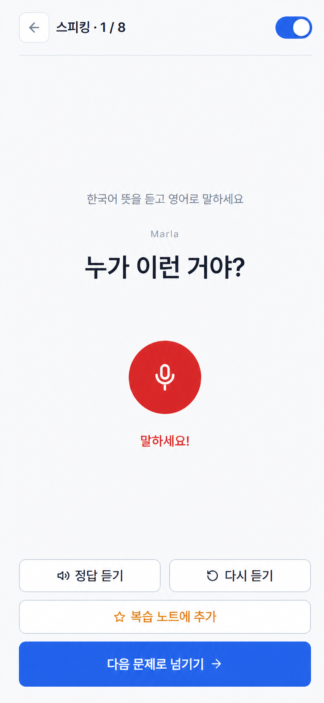
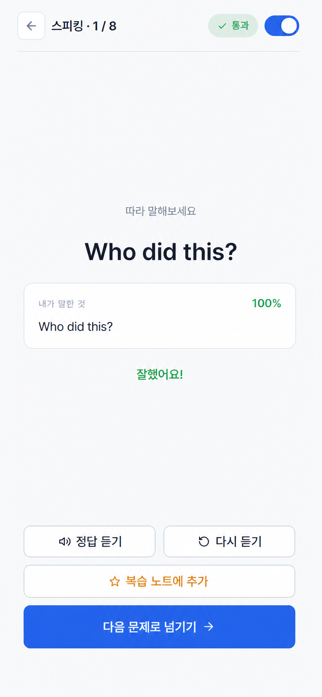
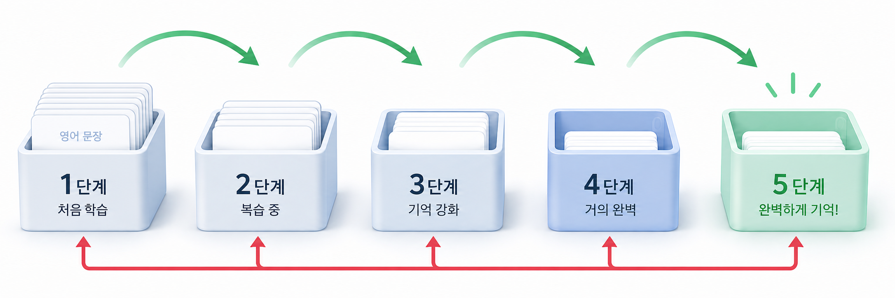
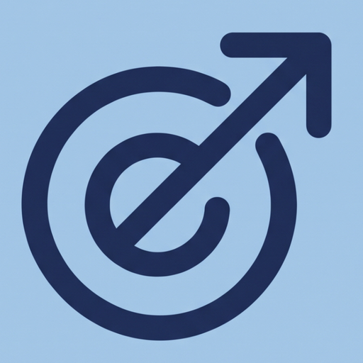

01
REGISTER
내 문장을 등록해요
단어와 예문, 설명을 한 번에 정리해나만의 학습 자료를 만듭니다.


WRITE · SPEAK · GROW
영어 암기 코치
저장해둔 단어와 표현을 앱이 알아서 꺼내줍니다.
걷는 시간에도, 잠깐의 여유에도. 말하고 쓰면서 내 것으로.
THE LEARNING FLOW
REGISTER
SYNC
PRACTICE
MEMORY BOX
모두를 똑같이 반복하지 않습니다. 기억 상태에 따라 문장마다 다음 순서가 달라집니다.

정답 · 기억 성공
오답 · 기억 미흡
목표 · 완전 암기

WRITE · SPEAK · GROW
지금, 나만의 문장으로 학습을 시작해 보세요.
영어 암기 코치 시작하기